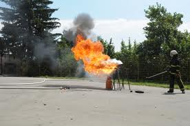
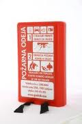

GORENJE OLJA
V KUHINJI LAHKO PRIDE DO VŽIGA OLJA. POGOSTA REAKCIJA OSEBE, KI OPAZI GOREČE OLJE V PONVI JE ZALITJE GOREČEGA OLJA Z VODO.
OB TEM, KO GOREČE OLJE GASIMO Z VODO STIK VROČEGA OLJA IN VODE PRIPELJE DO TAKOJŠNJEGA UPARJANJA VODE. TO POSLEDIČNO POVZROČI BURNO REAKCIJO IN ŠKROPLJENJE PREGRETEGA OLJA. NASTANE MAŠČOBNA EKSPLOZIJA. PRAVILNO IN PREVENTIVNO RAVNANJE V PRIMERU VŽIGA JEDILNEGA OLJA (ALI MASTI) V KUHINJI JE UPORABA POKROVKE S KATERO POKRIJEMO POSODO. S TEM ONEMOGOČIMO ZGOREVANJE OLJA – ODVZAMEMO KISIK. DO PONOVNEGA ODKRITJA POKROVKE JE TREBA POČAKATI NEKAJ ČASA. OLJE JE ŠE VEDNO SEGRETO NAD SAMOVŽIGNO TEMPERATURO, KAR OB PONOVNEM STIKU Z ZRAKOM TAKOJ PRIPELJE DO PONOVNEGA VŽIGA.

SLIKA 6: GAŠENJE OLJA Z VODO
POŽARNA ODEJA
V KUHINJO JE OB ŠTEDILNIK SMISELNO NAMESTITI POŽARNO ODEJO. TA JE UPORABNA PREDVSEM ZA GASENJE OLJA, KI SE JE OB CVRTJU VZGALO V PONVI.

SLIKA 7: POŽARNA ODEJA